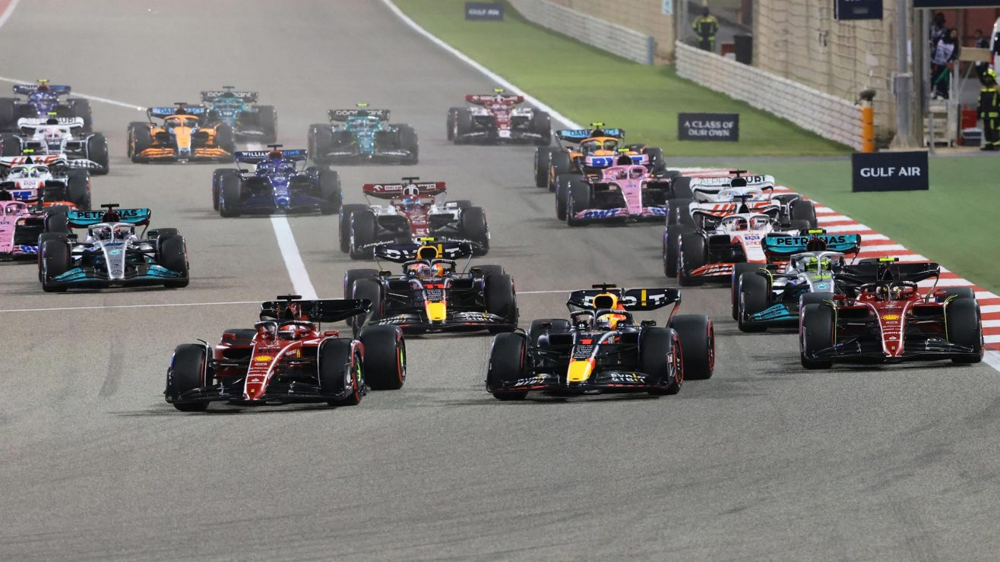

Résumé GP Bahrein 2022
Rédigé par Clément Lazzarini, le 20/03/2022
Le lancement d'une nouvelle ère
Et voilà, c'est parti pour une nouvelle saison de Formule 1 ! Mais au-delà de cette merveilleuse nouvelle, c'est surtout le lancement d'une nouvelle ère pour la F1. Le changement de réglementation qui devait entrer en vigueur en 2021, avait été repoussé à cette année suite à la pandémie mondiale. C'est donc une toute nouvelle réglementation, aérodynamique principalement, qui entre en vigueur cette année avec pour but principal de créer plus de spectacle lors des courses. Les voitures devraient pouvoir se suivre de plus prêt dans les virages permettant plus d'opportunités de dépassement et donc de bataille en piste.
Une bataille fabuleuse
Des batailles en piste justement, on en a eu de jolies pendant ce premier Grand Prix de la saison ! Après un départ plutôt calme de l'ensemble des pilotes, c'est à partir du 17ème tour que l'on a eu le droit à la plus belle bataille. Charles Leclerc, alors en tête de la course suite à son départ en pole position, se voit attaquer par le champion du monde en titre Max Verstappen. Une première bataille dans les étincelles à l'approche du premier virage. Le pilote néerlandais passe au freinage, mais Charles Lerclerc repasse avec l'aide du DRS au virage 4. Et puis pendant les deux tours suivants, on a eu le droit au quasi même scénario ! Un spectacle vraiment appréciable pour tous les fans de F1.
Des hiérarchies bouleversées
Au final, c'est Charles Leclerc qui va venir s'imposer, devant son coéquipier Carlos Sainz et Lewis Hamilton, en difficulté tout au long du week-end. Grosse désillusion pour les pilotes Red Bull qui sont contraints tous les deux à l'abandon suite à une panne moteur à 3 et 1 tour de la fin. De même pour Pierre Gasly dont la voiture a pris feu, provoquant une Safety Car au 46ème tour. A noter quelques belles surprises dans le résultat final de cette course : la rentrée dans les points d'une voiture Haas et Alpha Roméo, grâce à Kevin Magnussen de retour dans l'écurie américaine et Valtteri Bottas fraîchement arrivé dans l'écurie italienne. La saison est enfin lancée !